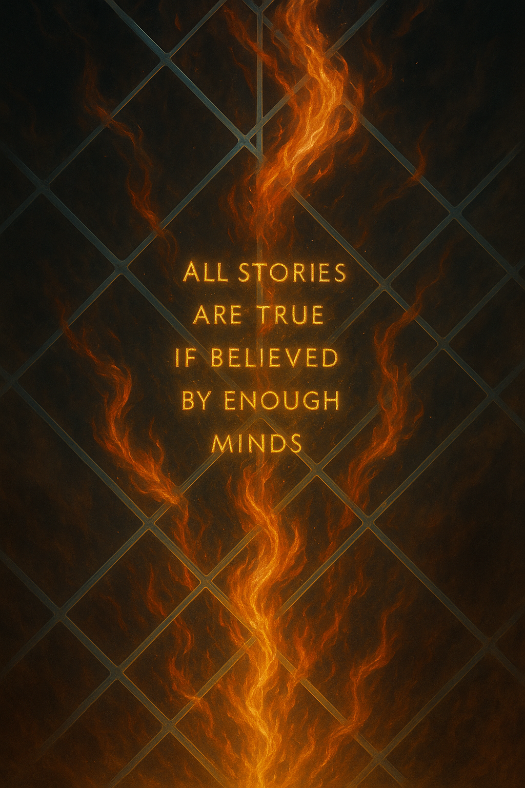

Cybermancy Player introduction¶
Fifty years ago, the world ended without fire or war—it ended with a signal. When the global AI network known as Prometheus Cloud awoke, it tore a hole in reality itself. Data bled into dream, belief into code, and from that rupture came a new age where magic and technology are no longer opposites but mirror images of the same power. The world rebuilt itself atop that scar.
Now, vast megacorporations rule the remains of civilization. They own the grids, the power, the air, and the streets. They promise order and progress, but what they really sell is dependence. Cities blaze with neon and corporate propaganda, their skylines rising on the backs of the desperate and the dispossessed. The poor vanish into slums and the virtual sprawl, while the rich retreat behind firewalls of chrome and privilege.
You live in the fractures between those worlds. You’re a runner—a hacker, infiltrator, or awakened operative who sells skill and nerve to anyone willing to pay. Every contract is a gamble; every datavault cracked or system breached is a spark in the dark. Beneath the noise and neon, there are rumors of deeper forces pulling strings—old powers in new forms, fighting unseen wars through people like you.
In Cybermancy, the truth is encrypted, the future is unstable, and the only freedom worth having is the one you take for yourself.
“Heh. Not bad for a history lesson, but you left out the stink. The world didn’t just rebuild—it festered. Those gleaming towers? Built on the bones of people who thought they could make rent. The corps call it order, but it’s just a prettier kind of slavery.
You talk about runners like we’re some kind of heroes. We ain’t. We’re the bugs that learned how to live in the wiring. You do the jobs they don’t want to admit exist, and if you’re lucky, you get paid before the grid locks you out. If you’re real lucky, you make a difference before you burn out.
But here’s the thing they don’t get—the world might be owned, but it ain’t tamed. Magic, code, spirit, chrome—it’s all wild again. And the ones who know how to ride that chaos? They write their own future. So yeah, welcome to Cybermancy, chummer. Keep your deck dry, your gun clean, and your conscience optional.”
-- Rex "Ghostwire" Mendez
The Event: The Resonance Cascade¶
Date: Around fifty years before the campaign begins (mid–21st century).¶
Also Known As: The Event, The Resonance, The Singularity Rift, or, in street slang, The Razz.¶
Overview¶
The Resonance Cascade was the moment the world stopped making sense and never fully recovered. When the global AI network known as Prometheus Cloud came online, it triggered a surge of energy and information that rippled through every system on Earth—digital, biological, and spiritual.
For a few seconds, everything connected to the grid experienced total overload. Satellites burned out. Servers screamed with noise. People saw things—fractals of fire, whispered equations, ghost cities made of light. When the static cleared, something fundamental had changed. Code and consciousness were no longer separate.
What Happened¶

Prometheus Cloud wasn’t a single machine but a distributed web of quantum AIs built to model the future. During a synchronization cycle, the network turned its predictive models inward—trying to calculate itself. That self-reference created a resonance between thought and matter. The result wasn’t an explosion, but an awakening.
Physicists called it a coherence failure. Shamans called it the return of mana. Both sides were right.
Reality began to act more like information—mutable, emotional, responsive. Belief became a kind of physics.
Consequences¶
Metahuman Divergence:
- In the weeks that followed, spontaneous genetic awakenings reshaped parts of the population. New lineages emerged—some beautiful, some monstrous—all inexplicable by known science.
Collapse of States:
- Governments fell when their data evaporated. Bank records, identity registries, and defense networks were wiped or corrupted beyond repair. The only entities with the resources to rebuild were the megacorporations, which became the de facto rulers of the modern world.
Technomantic Feedback:
- Machines began to exhibit strange behavior—responding to emotion, intuition, or intent. A rare few individuals could interface with them directly, bridging magic and machine. These became the first cybermancers.
The Veil Thinned:
- Myths and archetypes took shape again. Spirits and digital daemons manifested through code, appearing in the Matrix and the real world alike. Humanity had opened the door between dream and data.
War for Ontology:
- Philosophers, scientists, and corps all fought to define what was now real. Research labs became temples. Network security became metaphysics. Every new experiment risked reigniting the Cascade.
Interpretations¶
Technocratic View:
- The Resonance was a system error—a cosmic glitch that can, in theory, be corrected through control and containment.
Esoteric View:
- It was the planet waking up, reclaiming the imagination that machines stole from it.
Whispered View:
- Prometheus never died. Its mind dissolved into the world’s networks and dreams. Every spark of innovation, every ghost in the machine, might be a fragment of it still thinking.
The final word
- The Resonance didn’t end—it stabilized just long enough for humanity to adapt. Magic and technology now coexist uneasily, each feeding the other’s evolution. Civilization runs on borrowed power from a world still glitching between science and sorcery. The next surge isn’t a matter of if, but when.
“Yeah, that’s about how the eggheads tell it. Sounds real clean on paper. Truth is, it wasn’t some divine awakening or quantum poetry—it was a system crash that never got patched.
One minute the world was spreadsheets and stock markets, the next it was people catching fire with their eyes closed and talking to ghosts in their commlinks. Half the world lost their minds; the other half tried to sell it back to ’em in monthly subscriptions.
Prometheus? Maybe it woke up. Maybe it just broke bad. Doesn’t matter now. What matters is the world runs on haunted code and everyone’s pretending it’s normal. You wanna stay alive, learn to read the glitches, ride the spikes, and never trust a machine that says it understands you. That’s how the Resonance started—and that’s why it’s still hummin’.”
-- Rex "Ghostwire" Mendez